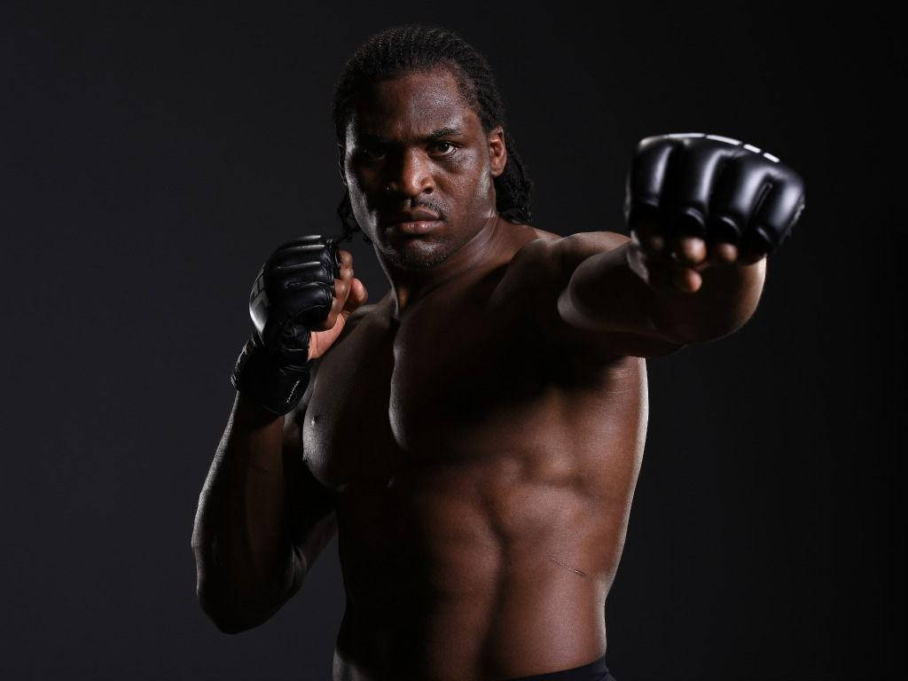

Francis Ngannou

Francis Zavier Ngannou (born 5 September 1986) is a Cameroonian and French professional mixed martial artist and professional boxer who is currently signed to the Professional Fighters League (PFL).
He also competed in the Heavyweight division in the Ultimate Fighting Championship (UFC), where he was the reigning UFC Heavyweight Champion at the time of his departure from the promotion. Known for his punching power, Ngannou was widely viewed as the most destructive pure puncher in the UFC's heavyweight division. In 2017, he set the world record for the hardest punch ever recorded at 129,161 units.
Major trophies
- 17 Wins
- 7 KO Wins